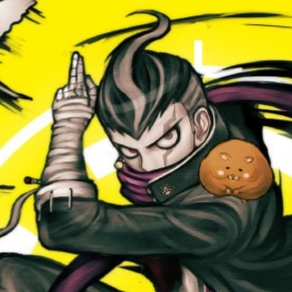

診断結果
あなたは「邪気眼系中二病」です。
特徴
- 自分には「選ばれし力」や「封印された力」があると思う。
- よくある設定：「右腕の痛みは封印された魔力のせいだ」「俺に近づくな、危険だ」。
- ノートに独自の魔法陣や呪文を描いたり、技名を考えたりする。
日常生活でのアドバイス
- 創作やファンタジーを楽しむ気持ちと現実との折り合いを付けながら生活しましょう。
- 想像力を活かして小説やマンガを作る趣味を始めると自己表現の場が広がります。
- 他人に押し付けないように注意しつつ、自分の楽しみとして大切にしてください。
邪気眼系中二病のキャラクター
めぐみん（この素晴らしい世界に祝福を！）
 中二病的な言動が多い紅魔族の少女で、特に 「爆裂魔法こそ至高！」 というこだわりが強い。詠唱をカッコよく決めるが、実際は 1回しか撃てず戦闘不能になる という残念な部分もある。紅魔族全体が中二病的な文化を持っており、めぐみんはその代表格。
中二病的な言動が多い紅魔族の少女で、特に 「爆裂魔法こそ至高！」 というこだわりが強い。詠唱をカッコよく決めるが、実際は 1回しか撃てず戦闘不能になる という残念な部分もある。紅魔族全体が中二病的な文化を持っており、めぐみんはその代表格。
田中眼蛇夢（スーパーダンガンロンパ2）
 「超高校級の飼育委員」として動物に最大限の愛情を注いでいるが、重度の中二病。手にしているのは実はハムスターだが、「破壊神暗黒四天王」と本人は呼び、いつも連れ歩いている。いずれ世界のすべてを支配する宿命であると本気で信じている。津島善子（ラブライブサンシャイン）
 元々は「ヨハネ」という名の天使だったのだが、あまりに美しい容姿を持っているため神に嫉妬され運気を奪われたがために堕天使となり、人間界に降りてきたという自己設定を持つ。この中二病設定は自身の名前のコンプレックスと不幸体質へのカウンターから来るものであり、理想の自分を作ることでポジティブに日々を送っている。
元々は「ヨハネ」という名の天使だったのだが、あまりに美しい容姿を持っているため神に嫉妬され運気を奪われたがために堕天使となり、人間界に降りてきたという自己設定を持つ。この中二病設定は自身の名前のコンプレックスと不幸体質へのカウンターから来るものであり、理想の自分を作ることでポジティブに日々を送っている。
海藤瞬（斉木楠雄のΨ難）
 「漆黒の翼」または「スクライドセイヴァー」を自称し、世界を守る使命を背負っているらしい。中二病設定は高校デビューの挑戦の結果であり、主人公・斉木も高校デビューに失敗した同類だと思い込みつきまとっている。
斉木楠雄のΨ難第一話
「漆黒の翼」または「スクライドセイヴァー」を自称し、世界を守る使命を背負っているらしい。中二病設定は高校デビューの挑戦の結果であり、主人公・斉木も高校デビューに失敗した同類だと思い込みつきまとっている。
斉木楠雄のΨ難第一話
神崎蘭子（アイドルマスターシンデレラガールズ）
 14歳のアイドル候補生で、重度の中二病。台詞の多くが過剰に比喩的で難解なので、基本的には何を言っているのかわからないことが多い。しかし、台詞の後に同時通訳がなされており、そのおかげで台詞の意味を理解できるようになっている。
「我が名は神崎蘭子！漆黒の堕天使にて、光輝なる集いの一翼！今、禁断の扉を開き、天空への階段に足を踏み入れん！(神崎蘭子です！ルミナスでのアイドル活動頑張ります♪)」
14歳のアイドル候補生で、重度の中二病。台詞の多くが過剰に比喩的で難解なので、基本的には何を言っているのかわからないことが多い。しかし、台詞の後に同時通訳がなされており、そのおかげで台詞の意味を理解できるようになっている。
「我が名は神崎蘭子！漆黒の堕天使にて、光輝なる集いの一翼！今、禁断の扉を開き、天空への階段に足を踏み入れん！(神崎蘭子です！ルミナスでのアイドル活動頑張ります♪)」